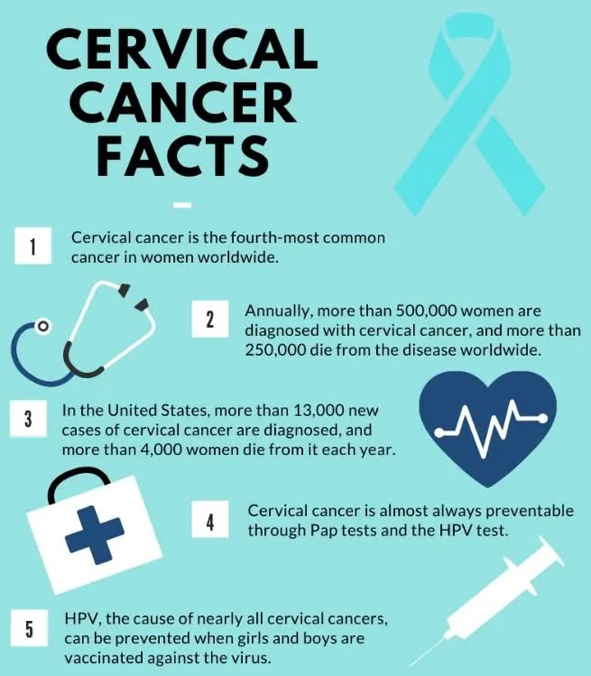

Women's Health
Essential information about cervical cancer screening, prevention, and early detection for all women, with special focus on immigrant communities.

What is cervical cancer?
Cervical cancer develops in the cells lining the cervix, usually over many years and almost always linked to persistent HPV infection. Caught early through regular screening, it is one of the most preventable and treatable cancers.
Download the material
A simple, illustrated factsheet explaining what cervical cancer is and why it matters for every woman.
Watch video
A short introductory video that explains cervical cancer in plain language, with no medical background required.
Understanding HPV
Human papillomavirus (HPV) is a very common virus spread through skin-to-skin contact, and certain high-risk types are the main cause of cervical cancer. Most infections clear on their own, but persistent ones need to be monitored.
Download the material
A factsheet on how HPV spreads, how common it is, and how it relates to cervical cancer risk.
Watch Video
A clear explanation of what HPV is, how it is transmitted, and why most infections are not a cause for alarm.
The HPV Vaccine
The HPV vaccine protects against the virus strains most responsible for cervical cancer. It works best when given before exposure to the virus, but can still offer protection later in life.
Download the material
A printable guide on who should be vaccinated, at what age, and how the vaccine schedule works.
Watch video
A short video on how the HPV vaccine works and why it is a key tool in cervical cancer prevention.
Why Screening Matters
Regular screening can detect abnormal cervical cells years before they turn into cancer, when they are easiest to treat. This is why routine checks save far more lives than treating symptoms after they appear.
Download the material
A guide outlining recommended screening intervals and why consistent testing makes such a difference.
Watch video
A video explaining, in real terms, how early detection through screening changes outcomes.
Pap Test vs. HPV Test
The Pap test looks for abnormal cervical cells, while the HPV test looks for the virus that causes them. Both are valid screening tools, and knowing the difference helps you understand your own results.
Download the material
A side-by-side comparison of the two tests, what each one checks for, and how often they are recommended.
Watch video
A walkthrough of how the Pap test and the HPV test are performed and what their results mean.
What Happens During the Exam
A cervical screening exam is quick and usually takes just a few minutes. Knowing each step in advance, from positioning to the sample collection itself, can make the visit feel far less intimidating.
Download the material
A step-by-step guide describing what happens before, during, and after a screening appointment.
Watch video
A video that walks you through a real screening exam from start to finish.
Tips for a Comfortable Exam
Small choices, like what to wear, when to schedule your visit, and what to ask beforehand, can make the exam noticeably easier. A little preparation goes a long way toward feeling at ease.
Download the material
A checklist of practical tips to help you feel more relaxed and prepared before your appointment.
Watch video
Simple, practical advice from healthcare professionals on making the exam as comfortable as possible.
Colposcopy Explained
A colposcopy is a follow-up exam used to take a closer look at the cervix after an abnormal screening result. It is a precaution, not a diagnosis, and helps doctors decide if any further treatment is needed.
Download the material
A guide explaining why a colposcopy may be recommended and what to expect during the procedure.
Watch video
A video explaining what a colposcopy involves and why being referred for one is not a cause for panic.
Common Myths About Cervical Cancer
Misinformation about cervical cancer, from who is at risk to what causes it, can keep women from getting screened. Separating fact from myth is a simple but powerful step toward prevention.
Download the material
A myth-versus-fact sheet addressing the most common misconceptions about cervical cancer.
Watch video
A video that debunks widespread myths with clear, evidence-based explanations.
Cervical Cancer Symptoms
In its early stages, cervical cancer often causes no symptoms at all, which is why screening matters so much. Knowing the warning signs, such as unusual bleeding or discharge, helps you know when to seek medical advice.
Download the material
A checklist of symptoms to watch for and guidance on when they warrant a visit to your doctor.
Watch video
A video covering the symptoms to be aware of and why early attention makes such a difference.
Overcoming Fear
Fear and embarrassment are among the biggest reasons women delay or skip screening. Understanding what to expect, and knowing these feelings are completely normal, can make it easier to take the first step.
Download the material
A guide with practical, reassuring advice for anyone feeling anxious about screening.
Watch video
Real stories from women who overcame their fear of screening, in their own words.
Pregnancy & Screening
Cervical screening is safe during pregnancy and, in some cases, is a routine part of prenatal care. Knowing when and why it may be recommended helps you plan ahead with confidence.
Download the Material
A guide on cervical screening recommendations before, during, and after pregnancy.
Watch video
A video answering common questions about screening and pregnancy.
Menopause & Screening
Cervical cancer risk does not disappear after menopause, which is why screening remains important for older women. Guidelines on when it is safe to stop can vary, so it is worth discussing with your doctor.
Download Material
A guide on screening recommendations for women during and after menopause.
Watch video
A video explaining why screening still matters after menopause and when it can safely stop.
Lifestyle & Prevention
Alongside vaccination and screening, everyday choices such as not smoking, safe sex practices, and a healthy immune system all help lower the risk of cervical cancer.
Download Material
A checklist of everyday lifestyle habits that support long-term cervical health.
Watch video
A video on practical, everyday steps that contribute to cervical cancer prevention.

A Day in the Screening Journey
In voluptate velit esse cillum dolore eu fugiat nulla pariatur excepteur sint occaecat cupidatat non proident sunt in culpa qui officia deserunt.
Dwonload Material
Mollit anim id est laborum sed ut perspiciatis unde omnis iste natus error.
Wattch video
Sit voluptatem accusantium doloremque laudantium totam rem aperiam.
Interactive Tools
Try our interactive tools to feel more seen and guided.
Symptom Triage
Not sure how urgently your symptoms need attention?

Screening Eligibility Checker
Are you eligible for routine cervical cancer screening?

Have Questions?
If you have questions about cervical cancer screening or need assistance accessing healthcare services, please contact your local health authority (ASL) or reach out to our research team.